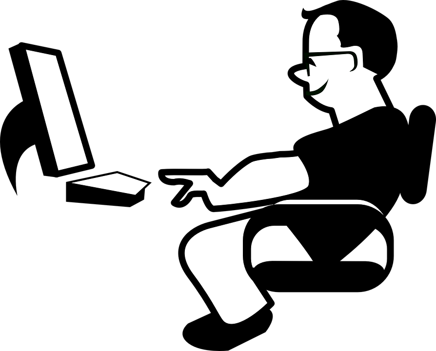

Página do GitHub, faça uma visita!

Todos os futuros projetos que eu desenvolver, estarei deixando disponíveis na minha página do GitHub, mesmo que sejam como esse, mais focados na brincadeira, apenas para descontrair um pouco.

O usuário (só fale esse nome com autorização) é conhecido por suas traquinagens enquanto explora a sua aplicação, caro Desenvolvedor de Sistemas.
Eles (os usuários), segundo definição da Wikipédia, seriam: “[...] agentes externos ao sistema que usufruem da tecnologia para realizar determinado trabalho.”
O Usuário, danado que só ele, tem por objetivo explorar suas aplicações, caçar bugs, tentar te dar dor cabeça. Por outro lado, se você gosta de passar o tempo corrigindo algumas falhas que eventualmente você pode ter deixado em seu código (mas não deveria ter deixado, diga-se de passagem), o nosso colega internauta pode ser seu braço direito, então, alegre-se!
Todos os futuros projetos que eu desenvolver, estarei deixando disponíveis na minha página do GitHub, mesmo que sejam como esse, mais focados na brincadeira, apenas para descontrair um pouco.